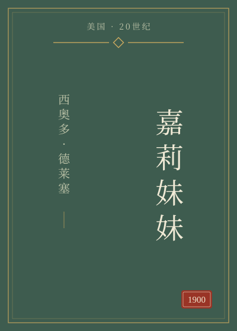

嘉莉妹妹
一、基本信息
| 作者 | 西奥多·德莱塞 |
|---|---|
| 成书/出版 | 1900年出版（作者页B280口径：Sister Carrie——1899年动笔；首版'sold fewer than 500 copies'） Theodore Dreiser — Encyclopaedia Britannica（百科全书） |
| 国别/地区 | 美国 |
| 时代 | 现当代 · 20世纪 |
| 体裁 | 长篇小说 |
| 语言 | 英语 |
《嘉莉妹妹》升降结构图（主题·结构图）
二、创作背景
Britannica（B280）：'Dreiser began writing his first novel, Sister Carrie, in 1899 at the suggestion of a newspaper colleague'；'Doubleday's qualms about the book, the story line of which involves a young kept woman whose immorality goes unpunished' led to limited advertising，'sold fewer than 500 copies'。
作者（B280）：'the outstanding American practitioner of naturalism'（美国自然主义最杰出实践者）。
三、内容脉络
嘉莉进城：从打工到'kept woman'——'immorality goes unpunished'（B280 语境）。
赫斯特伍德的坠落：从经理到流浪（通说待核）。
四、主要人物表
| 人物 | 身份 | 说明 |
|---|---|---|
| 嘉莉·米伯 | 打工女 | 上升者（通说待核） |
| 赫斯特伍德 | 经理 | 下坠者（通说待核） |
五、主题与艺术特点
- 城市的欲望机器（通说）。
- '道德不受惩罚'的挑战（B280：immorality goes unpunished）。
- 自然主义的命运观（B280 语境）。
六、影响与评论
- Britannica：'immorality goes unpunished'引发的出版顾虑——仅售不足500册（B280）。
Theodore Dreiser — Encyclopaedia Britannica（百科全书） - 作者页：德莱塞为自然主义最杰出实践者（B280 作者级定位）。
Theodore Dreiser — Encyclopaedia Britannica（百科全书）
七、阅读建议
难点
- 自然主义的道德中立。
- 1900年代芝加哥—纽约。
- 《嘉莉妹妹》（人民文学出版社/上海译文版本，通说待核）。
- 英文原版（公有领域）。
自然主义入门：先本作后《美国的悲剧》。
八、待核实
- 1900年出版（Doubleday, Page说）核对。
- 嘉莉/赫斯特伍德人名核对。
- 1931年再版风波待核。
本页主要来源
西奥多·德莱塞的其他收录作品：嘉莉妹妹